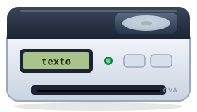

Tema 9Ciclos
Una de las ventajas de las funciones es que nos permiten reutilizar código cuantas veces queramos, pero, ¿qué pasa si queremos ejecutar una serie de líneas de código múltiples veces? Los ciclos son estructuras de control que resuelven esta necesidad. Imagina que tienes un arreglo de 1000 elementos, escribir 1000 líneas de código para acceder a cada elemento del arreglo no sería práctico. Entonces, en lugar de escribir cada línea, creamos un ciclo que se ejecutará 1000 veces para acceder a cada elemento del array.
Los ciclos están presentes en todos los lenguajes de programación, y típicamente se implementan de dos maneras: con las palabras reservadas for y while. A continuación veremos algunos ejemplos.
El Ciclo For
La sintaxis para implementar un ciclo for es la siguiente:
for (expresión inicial; expresión condicional; expresión cíclica) {
// código a ejecutar
}
-
Normalmente, en la expresión inicial colocamos una variable que nos servirá como contador para el número de veces que se ejecutará el ciclo.
-
En la expresión condicional se coloca la condición para que el ciclo continúe ejecutándose. Esta condición también se revisa antes de la primera iteración del for-loop (la primera vez que se corre el código dentro del ciclo).
-
Finalmente, la expresión cíclica es una expresión de código que se ejecutará entre cada iteración. Normalmente, se utiliza para modificar la variable que utilizamos como contador.
Este ejemplo utiliza un ciclo for para mostrar todos los elementos en un arreglo.
 Haz clic en para que la
banda recorra el arreglo completo, en para
avanzar una parte del ciclo a la vez o en
para empezar de nuevo.
Haz clic en para que la
banda recorra el arreglo completo, en para
avanzar una parte del ciclo a la vez o en
para empezar de nuevo.
- manzana
- pera
- uvas
- mango
- kiwi


var elementos = [ "manzana", "pera", "uvas", "mango", "kiwi" ]; var texto = ""; for (var i = 0; i < elementos.length; i++) { texto += i + ": " + elementos[i] + "\n"; }
La banda está vacía: las cajas esperan fuera del cuadro. El ciclo todavía no empieza.

Fotografías de Wikimedia Commons: manzana y uvas de Andrikkos (dominio público); pera de Nesnad (CC BY 4.0); mango de Bff (CC BY-SA 3.0); kiwi de André Karwath (CC BY-SA 2.5, se le quitó el fondo); puesto de frutas de Wilfredor (CC0); caja de HireAHelper (CC BY 2.0, se le quitó el fondo). Ilustraciones de la banda: elaboración propia.
Lee detenidamente el código, especialmente el ciclo for y sus declaraciones. Primero, declaramos la variable i con un valor de 0 en la expresión inicial. Después revisamos la expresión condicional: el sensor de la banda busca si todavía hay una caja enfrente. Si resulta en True, la línea dentro del ciclo se ejecuta, y, al terminar la primera ejecución, se ejecuta la expresión cíclica para aumentar el valor de i en uno y la banda avanza una caja. Dentro del ciclo, modificamos la variable texto que creamos anteriormente. Con cada iteración le concatenamos una cadena de caracteres que indica el índice del elemento y su valor, tal como la impresora lo va sacando en el ticket. Al final de la nueva cadena agregamos \n para que se agregue un salto de línea al final de cada elemento.
El ciclo for se ejecuta 5 veces debido a que el arreglo "elementos" contiene 5 elementos. Después de la última iteración, a la variable i se le asigna un valor de 5, y, como este no es menor a 5, el ciclo termina de ejecutarse.